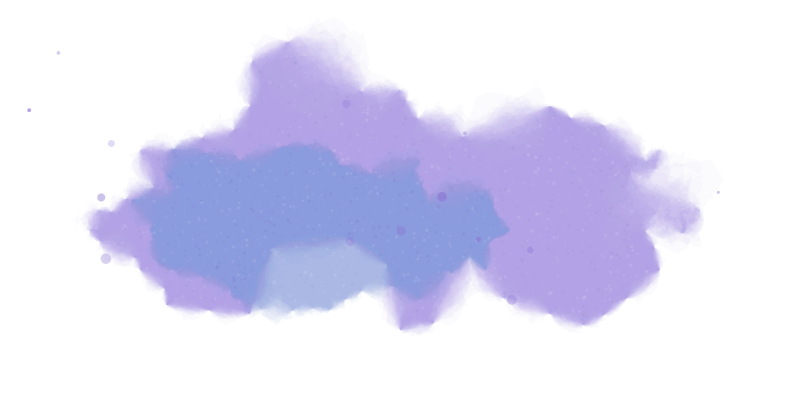
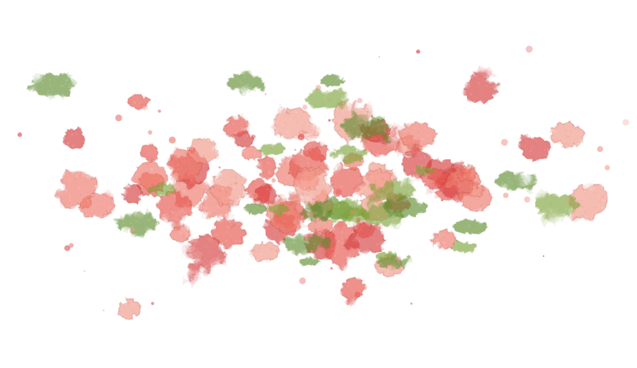
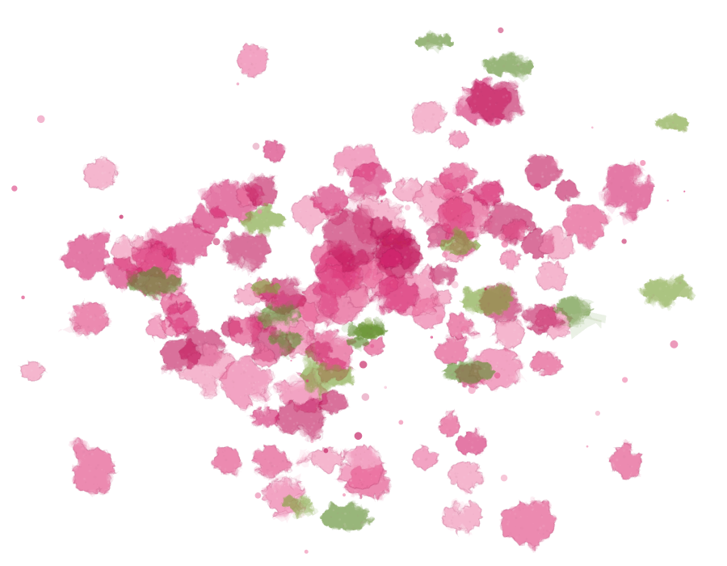
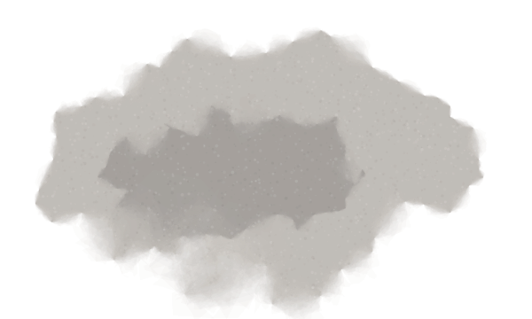
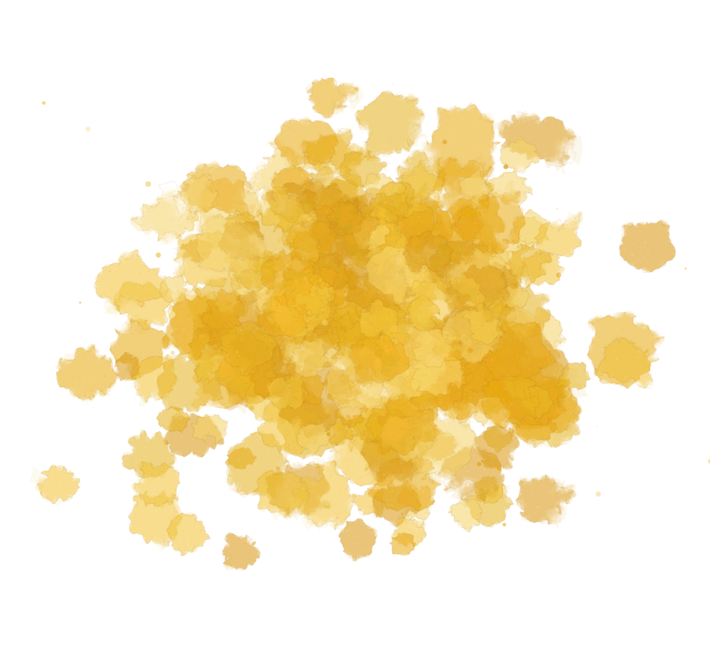

[ Edições por temporada ]
Primeira coleção · 22.09.2026
Arranjos florais

autorais
Uma coleção semanal de arranjos florais autorais. Um exercício de curadoria, criatividade e sensibilidade para o nosso bem-viver.
A cada semana, ao menos três composições são divulgadas em nossas redes para você escolher seu exemplar preferido.
Disponíveis sob demanda, enquanto durar a edição. Exclusivo em Belém do Pará.


Essencial
Onde beleza, composição e naturalidade se encontram. A expressão da nossa assinatura.
Quero um Essencial

Unique
A criação singular. Livre para ser elegante, exuberante, minimalista ou inesperada, conforme a coleção.
Quero um Unique
-

1Acompanhe
A cada semana, ao menos três composições são divulgadas em nossas redes.
-
2
Escolha
Para você escolher seu exemplar preferido.
-
3
Peça
Disponíveis sob demanda, enquanto durar a edição. Exclusivo em Belém do Pará.
A gente passa boa parte da vida aprendendo o que ter, o que fazer, como viver; o que é bonito, adequado, desejável, bem-visto.
Aprende a reproduzir o que já está dado.
Mas, talvez, haja uma pergunta anterior:
Que vida queremos tornar possível?
O que nos faz bem?
O que é essencial?
Entre o que já existe e o que poderia ser (…)
Começamos por dentro: observando, percebendo e filtrando o que queremos cultivar, até darmos forma ao que importa, faz sentido e faz bem.
Assim escrevemos, imaginamos e criamos:
Espaços.
Composições.
Textos.
Atmosferas.
Ideias.E, sobretudo, novas possibilidades:
Composições.
Textos.
Atmosferas.
Ideias.E, sobretudo, novas possibilidades:
- De encontrar beleza onde ela quase passa despercebida.
- De permanecer atentos ao que está vivo e é essencial para nós
- De imaginar outros caminhos quando tudo parece já estar definido.



O que fazemos para você:
Consultoria de Interiores para o bem-viver:
Para quando a casa, o escritório ou a sala de atendimento já não acompanha tão bem a vida que você leva.
Uma leitura cuidadosa do seu espaço e momento de vida para perceber, no que já existe, novas possibilidades de acolher sua rotina e aquilo que importa para você.
Construímos diretrizes para mudanças singelas de composição, organização e atmosfera: sem obras, pensadas com esmero e dentro da sua realidade.
Atendimento 100% online.
Quero saber mais
ESMERO por Juliana Corrêa
Lições de uma flor
Se pudéssemos ouvi-las, o que elas teriam a nos dizer?
As flores sempre despertaram algo em nós.
Mas o que exatamente acontece quando ficamos diante delas?
Talvez a resposta passe pelos sentidos, pelas emoções, pela memória, pela atenção, pelo cuidado e também pela nossa capacidade de encontrar significado e encantamento nas coisas simples.
Em outras palavras: o que uma flor pode revelar sobre a nossa própria interioridade?
Talvez refletir sobre essa pergunta seja também uma forma de nos aproximarmos de um viver com mais Esmero.


Quem está por trás:
Juliana Corrêa
Advogada e designer de interiores, Juliana encontrou na criação um fazer mais sensível e coerente com o que há tempos pedia voz e espaço dentro dela mesma. Foi assim, olhando pra dentro, que idealizou a ESMERO: um espaço de expressão, experimentação e cultivo, onde criatividade e esmero se colocam a favor do nosso próprio florescer.
ABD 39-093
Quando o interior faz sentido, o bem viver ganha espaço para florescer.